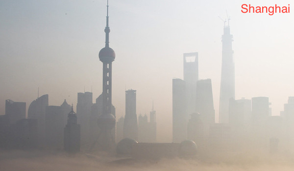

Introduction to PM2.5 in China
Small Particulate Matter with a mean aerodynamic diameter of 2.5 μm (PM2.5) is especially detrimental to health. People with breathing and heart problems, children and the elderly may be particularly sensitive to PM2.5. PM2.5 has drawn international attention and more and more monitoring stations have been established to collect data on PM2.5 concentration, which is used for broadcasting and scientific studies.
China is one of the developing countries that suffers the most severe PM2.5 conditions. This website presents the data of PM2.5 in China available to the public and allows us to explore the data interactively.

Air Quality Index
Explore the Visualization of the PM2.5 Data!